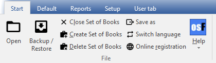
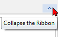
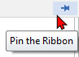

Ribbons
The functions and features and utilities are grouped in five (5) Ribbon tabs.

|
|
Show / Hide Ribbon options You may need some extra space when working with, Documents, Stock, Debtors, Creditors, Ledger analyser, etc. To Auto hide the ribbons options, double-click on any of the ribbon tabs. This will hide the options on the ribbon and only display the ribbon tabs and auto-resize (larger) the screens in osFinancials5. You may then click on a ribbon tab to select and access the options. Once you have selected an option, the ribbon options will auto hide and only display the ribbon tabs. To Show the ribbon options and resize the screens (smaller), you may double-click on a ribbon tab. |

|
|
Show / Hide Ribbon options You may also hide or show the ribbon options using the "Collapse the ribbon" and "Pin the ribbon" icons on the bottom of the right-hand corner of the ribbon options strip:  “Collapse the Ribbon” - this will hide the ribbon options strip.  “Pin the Ribbon” - this will show the ribbon options strip. |
These ribbon tabs are:
- Start - This ribbon tab is used to manage your sets of books, backups, registration and language.
- Default -
- Records - Debtors, creditors, contacts, stock items, appointments, tasks, etc.
- Processing of transactions in sales documents (i.e. invoices, credit notes and quotes) and purchase documents (i.e. purchases, supplier returns and orders), batches (journals), managing open item accounts (adjust payment dates and/or process receipts / remittance advice for payments and/or refunds, etc.
- Periodic processing – Open item, Reconciliation, Repeating transactions Repeating invoices.
- Search – Search for data in the central search and print transactions and documents, etc.
- Reports - Print reports, User reports, Spreadsheet reports, Ledger analyser, T-account viewer, Age analysis, Printer setup, etc.
- Setup - This ribbon tab is used to access the Setup, Tools, Global processes, Themes and Plugins.
- User tab - This ribbon tab is a custom (quick menu). It is used to manage user navigation in a Set of Books. You may select (tick) the "Auto-learn" feature to add the last accessed options in up to six (6) groups.